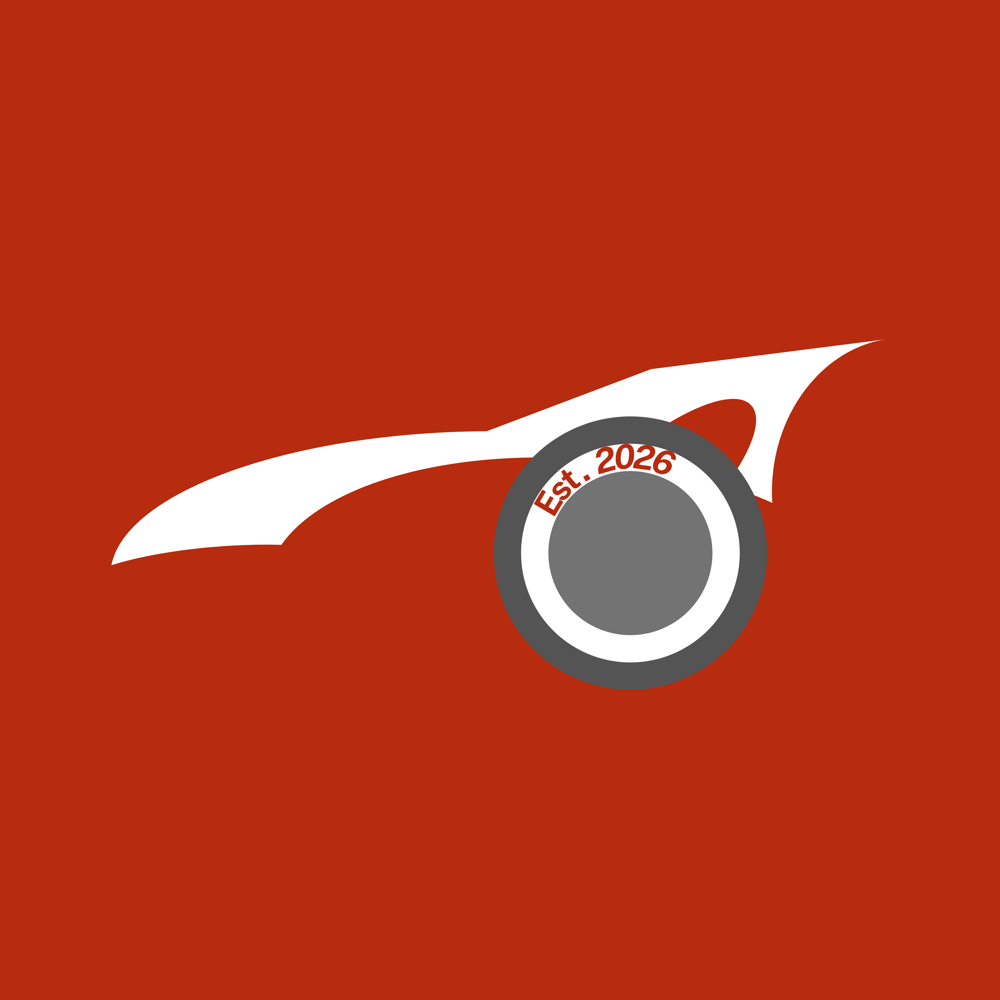

未来を動かすハンドルと、どこへでも行ける地図を。
「ここで育ってよかった」と、20年後に帰ってきたくなる街。
ブレない信念・基準を持ち、進むべき方向を定める中心的支柱。
経営と現場、論理と感性。異なる要素が交わる場所から、真の価値を生み出す。
現場の人間に力を与え、自発的なエネルギーを湧き出させる。
地域、人、そして未来。途切れることのない強固な繋がりをデザインする。
やる気スイッチを入れ、受けた恩を原動力に変えて、情熱を燃やす。
現状に満足せず、常に一つ上のステージへ挑戦し続ける。
経営参謀・顧問
「利益なき繁忙」からの脱却。
管理会計に基づいたキャッシュフロー経営と、
会社を守るための「社内ルールの設計」を支援します。
業務アプリ開発・DX
高額なシステムは不要。
現場で本当に使える「利益シミュレーター」や
「業務効率化アプリ」を、必要な機能だけに絞って開発します。
地域ブランディング
採用支援、事業承継、そしてアート教育。
藤岡というキャンバスに、
次世代に残すべき文化と経済圏をデザインします。
クライアントの課題を解決するために開発した、実際のツールとスキームです。
「ドンブリ勘定」からの脱却。
材料費(F)と人件費(L)のバランスを瞬時に解析し、
儲かる店への構造改革を支援するWebアプリ。
「利益率はラップタイムだ！」
製造・飲食業のコスト課題をF1理論で解決する対話型AI。
Google Gemini APIを活用した、クセの強い鬼コンサルタント。
旅費規程・福利厚生の戦略的活用。
会社を守る「鉄壁の規定」を整備し、
法人と個人のキャッシュフローを最適化する資産形成支援。
「売上はあるのに利益が残らない」製造業へ。眠っている設備を稼働させ、追加投資なしで利益を最大化する評価制度改革パッケージ。
「CO2排出量を報告せよ」という大手からの要請に対応。単なる数値計算に留まらず、専門パートナーと連携した実質的な省エネ診断・再エネ導入で、コスト削減と取引継続を実現。
「AIの解析」と「熟練の修正」の融合。
図面から部材をAIが自動抽出。解析結果を使い慣れたExcel形式で出力し、現場担当者が最終微調整を行える現実的なロジックを搭載。
100%の精度を追い求めないことで、実業務での「最速の見積り」を実現する実戦型ツール。
「あの基準、どこに書いてあったっけ？」をゼロに。
国交省の膨大な積算基準や施工管理マニュアルをAIが学習。現場の疑問に数秒で回答し、若手への技術継承とベテランの確認作業を劇的に効率化。
「マニュアルを探す時間」を「現場を動かす時間」へ変える、社内知財の即戦力化ツール。
次世代のビジネスリスクを体感する。
自社開発のAI搭載シミュレーターで、あなたの防衛力をテストしてください。
「理系思考 × 現場叩き上げ × 丸の内戦略」
応用化学科卒。物質の構造を分解するように、ビジネスの課題を論理的に分解する「サイエンス思考」が武器。
大手インフラ企業にて、製造工場の原価管理・品質保証（QC）を歴任し、モノづくりの現場を熟知。
その後、東京・丸の内本社にて事業企画・経営戦略に従事。
「泥臭い現場」と「洗練された戦略」の双方を知る稀有な参謀として、 地域企業の経営を次のステージへ導く。
私たちのValueである『「なぜ？」を面白がる』。それは単なる知的好奇心ではなく、旧態依然としたビジネスの不条理に対する、私自身の強烈なアンチテーゼでもあります。大手インフラ企業の泥臭い現場から、東京・丸の内の経営中枢まで。両極端の世界を歩む中で、私が常に抱いていた最大の「なぜ？」は、形骸化したルールや意味のない忖度によって、現場で働く人々の尊い命（時間）がすり減っていく光景でした。
ビジネスの目的は、沈みゆく組織を延命させることではありません。
私は自身の命を、愛する家族と子どもたちが生きるこの街の未来を守り、そして、地域で闘う経営者たちの「利益なき繁忙」を終わらせるために使うと決めました。理系思考で課題を分解し、最先端のAIで現場を加速させる。「洗練された戦略」と「泥臭い現場」の交点（Cross）にこそ、真の変革が生まれます。
あなたの会社の次なるステージへ向けて。共に、アクセルをOnしましょう。
1976年より本田技術研究所（Honda R&D）に在籍し、世界最高峰のモータースポーツであるF1のプロトタイプ部品開発に半世紀近く携わった元・熟練エンジニア。2023年の退職を経て、AxelOnの技術顧問として密かに参画。
私たちのValueである「『なぜ？』を面白がる」体現者であり、当社のモノづくり思考の源流です。0.01ミリの妥協も許されない極限のレースの世界で培われた「世界基準の品質への執念」と、「自ら考え、自ら手で生み出す」という世界最高峰の現場で培われたモノづくり哲学。その精神は、AxelOnが提供する利益シミュレーターやDX支援のアルゴリズム構築において、決してブレることのない強固な土台となっています。表舞台には立ちませんが、長年の現場経験で磨かれたその眼力は、私たちの提供するすべてのソリューションに「本物の精度」をもたらしています。
幼少期から高校まで絵画教室に通う。大学受験で美大を目指すも、就職難の荒波にのまれ断念。家政系の大学を卒業し、教員として仕事をしていたが、美術の道に進まなかったことを後悔していた。40歳を過ぎ、美術の道に戻りたい思いが強くなり、武蔵野美術大学通信教育課程に入学。わずか10ヶ月で全ての単位を取得し、修了。中・高美術教員免許を取得。仕事を辞め独立。
2023年11月、群馬県藤岡市に、あーとみっくす絵画造形教室を開校。自らもアーティストとして活動し、生命の煌めきを表現した「スパークルアート」を確立。特許を取得。
2025年1月に、障がいのあるなしに関わらずアーティストの原画から商品化・販売をする＆ART（アンドアート）事業を立ち上げ、桐生てぬぐい（有限会社
平賢）とコラボレーションをした商品を発表。その他にもアートに関する活動を精力的に行い、2024年10月・2025年4月には藤岡市のふじの咲く丘で行われた、ART
& CRAFT みっくすフェスタの実行委員長を務めるなど、アートの普及に尽力している。
2024年 自身で考案した「スパークルアート」が商標登録される。
AxelOn 参画背景：
論理と数字で構成されるAxelOnのビジネス展開において、予測不能な「アートの次元（感性）」を注入すべく、別会社の代表でありながら謎のCAOとして密かに参画。